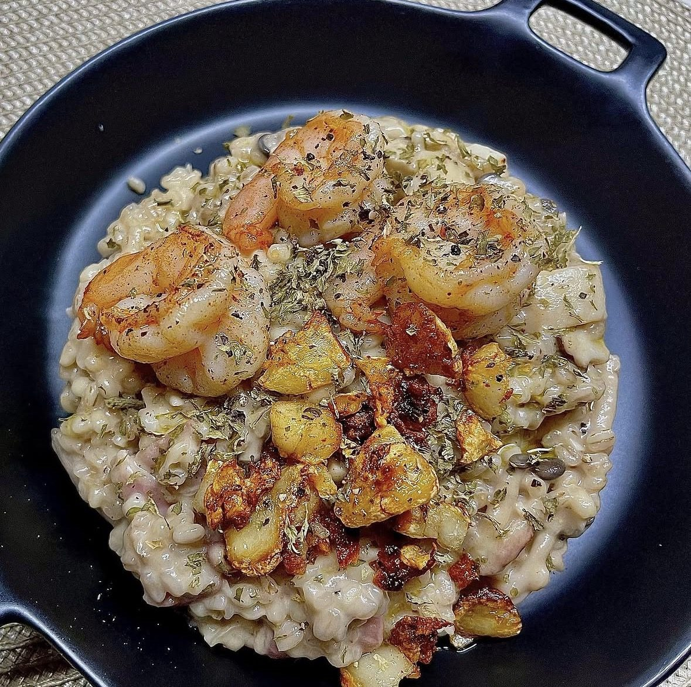

양식 · 40분 · 난이도 중
톡톡 씹히는 보리쌀 버섯 리조또
쌀 대신 보리쌀로. 오래 익혀도 알갱이가 톡톡 살아 있어 크리미한 소스 속에서 씹는 재미가 확실한 리조또.

- Time
- 40분
- Difficulty
- 중
- Serves
- 1인분
- Equipment
- 1구 인덕션
리조또는 쌀로 만든다는 고정관념을 깨고 보리쌀로 만들어봤어요. 위에 버터에 구운 새우를 올리고 트러플 오일을 몇 방울 떨어뜨리면 레스토랑 접시 같은 모양이 나와요. 보리쌀은 쌀보다 익는 데 오래 걸려서, 미리 한 번 삶아두는 게 시간을 줄이는 방법이에요.
Méthode
- 보리쌀 삶기보리쌀은 씻어서 끓는 물에 15분 정도 삶아 체에 밭쳐요. 이 단계까지는 전날 해두어도 돼요.
- 향채와 버섯 볶기팬에 올리브유를 두르고 다진 양파와 마늘을 투명해질 때까지 볶은 뒤, 버섯을 넣고 숨이 죽을 때까지 볶아요.
- 스톡 부어가며 젓기삶은 보리를 넣고 1분 볶다가, 치킨스톡 물을 한 국자씩 부어가며 중약불에서 10분 정도 저어요.
- 크림과 치즈로 졸이기보리가 거의 익으면 우유(생크림)와 파마산 치즈를 넣고 걸쭉해질 때까지 졸여요. 소금·후추로 간을 맞춰요.
- 새우 굽기다른 팬에 버터를 녹여 새우를 앞뒤로 1분씩 구워요.
- 담고 마무리접시에 리조또를 담고 새우를 올린 뒤, 트러플 오일과 다진 파슬리로 마무리해요.
Chef's Note — 원룸 팁
팬이 하나뿐이라면 새우를 먼저 구워서 따로 덜어두고, 같은 팬에 리조또를 만들면 새우 향이 소스에 배어 더 맛있어요.
트러플 오일은 불을 끈 뒤에 넣어야 향이 날아가지 않아요.
같은 리조또라도 곡물 하나 바꾸니 완전히 다른 요리가 됐어요. 보리 특유의 고소함이 버섯, 트러플과 잘 어울려서 손님 초대 메뉴로도 추천해요.